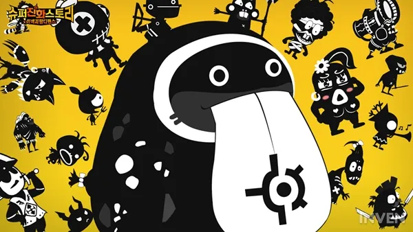

📖
종합 공략 — 자주 묻는 질문 & 팁
태초·신생 육성부터 유전자·룬 세팅, 수호신 순서, 컨텐츠 진행, 상점 구매 우선순위까지 한 페이지에.
🃏
덱 공략 — 현역 티어덱
희전완포 메타 기준 현역 덱. 슾카·희전+탱커·오스·제로·디바인덱 구성과 운용, 덱 진로까지.
게임 개요
슈퍼 진화 스토리(줄여서 슈진스)는 2018년 1월 31일 출시된 한국 모바일 롤플레잉 게임입니다. NTfusion이 개발하고 퍼펙트 월드 코리아가 서비스한 콜렉션 기반 게임으로, 최대 5기의 몬스터로 진형을 구성해 모험·결투장·도전 등을 공략합니다.
전투가 시작되면 몬스터의 스킬·공격은 직접 컨트롤할 수 없지만, 대신 수호신 시스템으로 타이밍에 맞춰 버프·디버프를 발동해 승패를 가릅니다. 몬스터는 진화 · 유전자 변이 · 스킬 강화 · 룬 · 유물 등 다양한 방식으로 강해집니다.

공략 페이지
아래 카드에서 원하는 주제로 바로 이동하세요.
핵심 시스템 한눈에
| 시스템 | 요점 |
|---|---|
| 진형 | 최대 5기 편성. 슬롯은 레벨 2 · 6 · 19 · 23에 추가로 개방. |
| 진화 | 용족 · 좀비 · 정령 · 인형 · 태초만 진화 가능. 포지션 분기 주의. |
| 수호신 | 5종. 패시브 + 액티브. 에너지 1~3칸 소모, 발동 시마다 비용 증가. |
| 룬 | 같은 룬 3개 합성으로 등급 상승. 일반 7종 + 특수 8종. |
| 유전자 변이 | 골드·강화포자로 해금 후 랜덤 변이. 교점에서 '왕유전자'. |
| 유물 | 전투력 상승 비중 최대. 발굴 포인트로 속성 강화(매우 중요). |
| 재화 | 골드(강화·합성), 젬(행동력·소환), 행동력은 4분당 1 회복. |
TIP. 부족(길드)은 가입만 해도 도움이 큽니다. 슈진스에서는 길드를 '부족'이라 부릅니다.